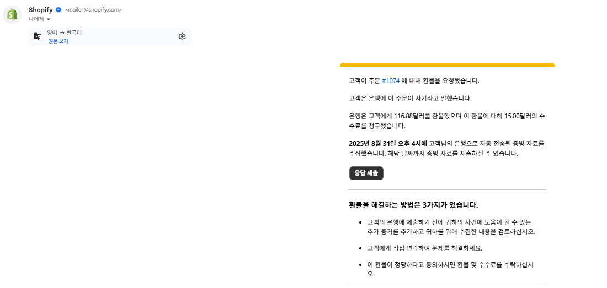
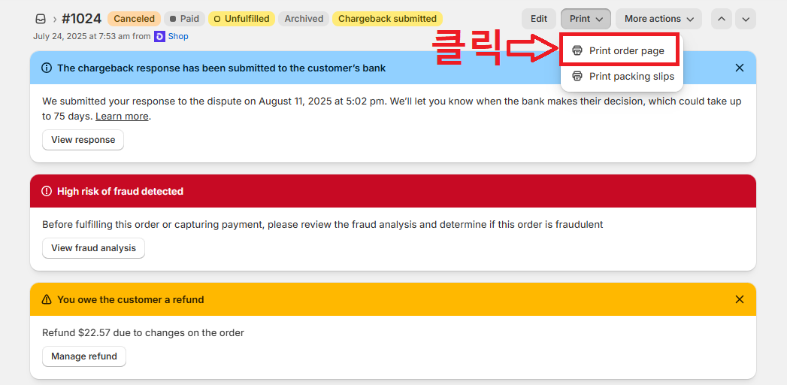
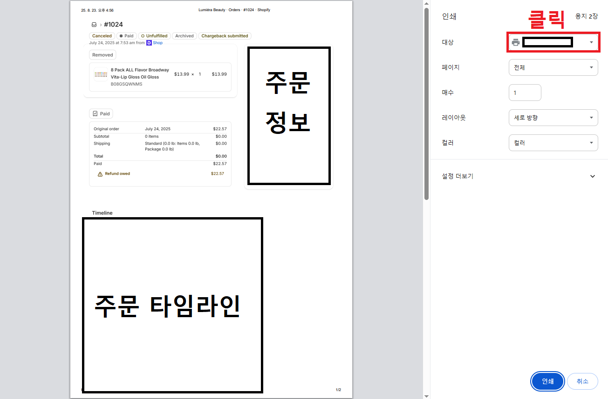
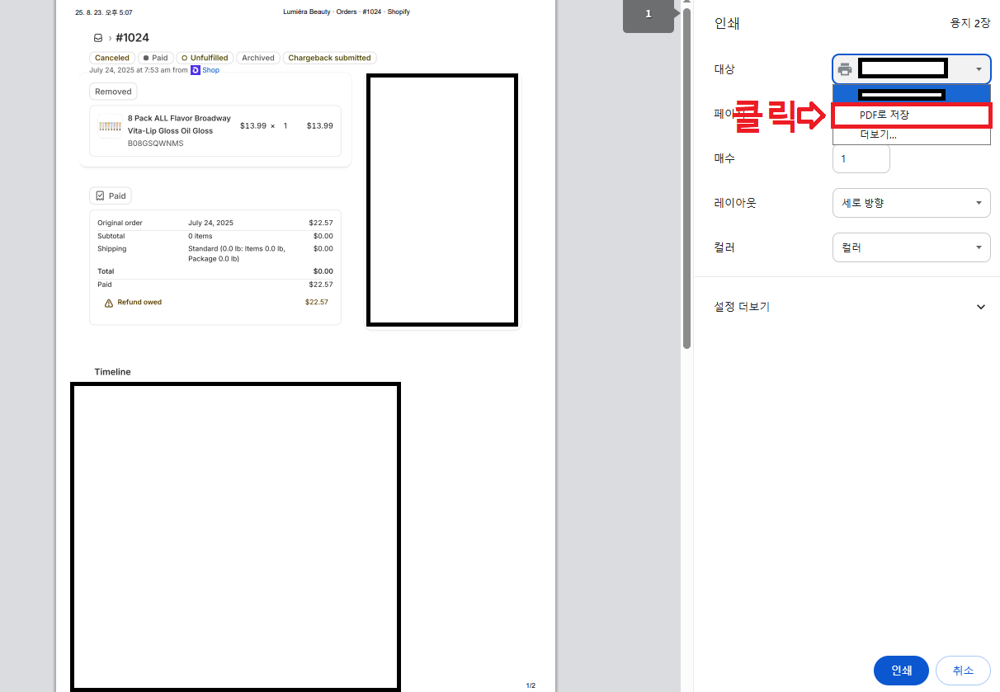
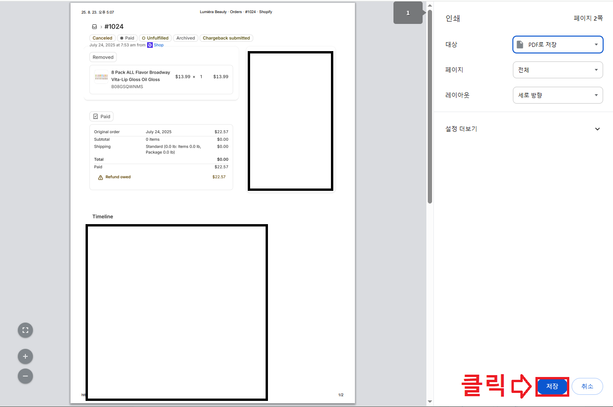
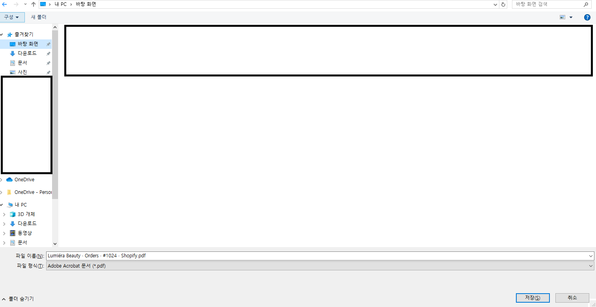
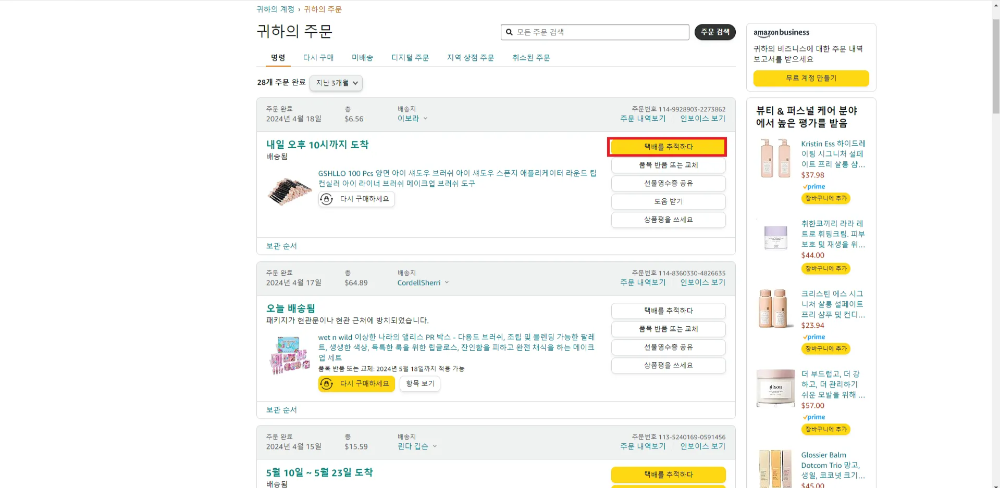
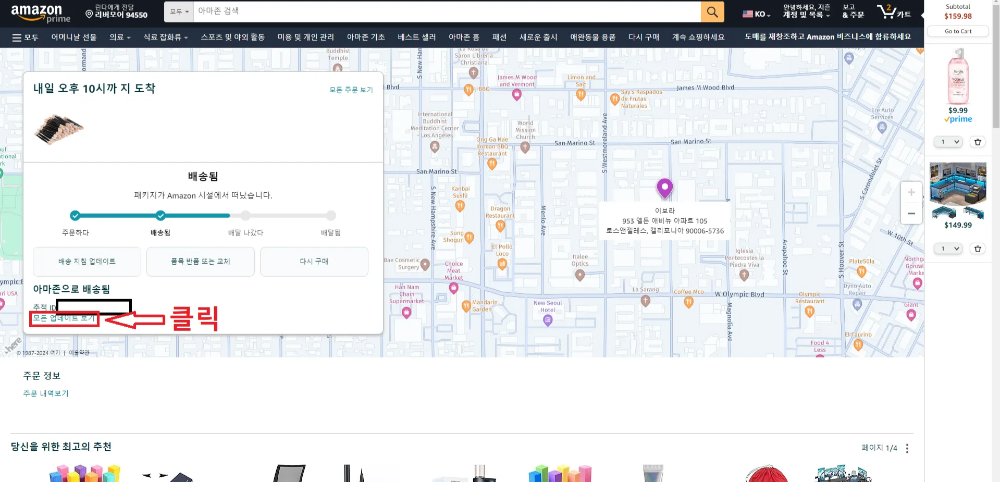
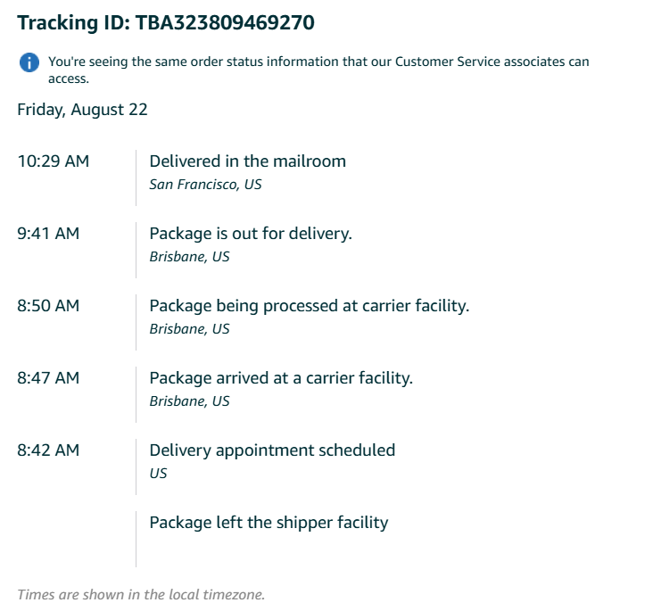

차지백 대응 가이드라인
| 생성자 | 지흔 임 |
|---|---|
| 생성 일시 | |
| 카테고리 | 전체공개 |
| 최종 편집자: | 지흔 임 |
| 최종 업데이트 시간 | |
| 태그 |
차지백의 경우 다양한 경우의 수가 존재합니다. 그렇기에 상황에 맞춰서 대응해야 됩니다.
본 메뉴얼에서 본인이 해당되는 내용을 찾아서 확인해 주세요.
만약 없는 경우 또는 잘 모르는 부분에 대해서는 카카오톡 플러스 채널로 문의 주시면 감사하겠습니다.
- 확인하고자 하는 글에서 왼쪽 ▶을 눌러서 전체 내용을 확인해 보세요.
필독 사항
- 차지백은 빠르고게 처리하고 평소에도 고객과의 소통을 열심히 하게 되신다면 정말 결과가 나올 수 있습니다. 그렇기에 꼭 평소 고객들과의 소통을 신경을 써주세요.
※ 반품이나 환불 진행 시 꼭 고객과 메일로 소통을 해주세요.
- 차지백이 들어온 경우 다음과 같은 메일이 오게 됩니다.
이때 당황하지 않고 아래 가이드 라인에서 본인이 해당되는 내용대로 준비하시면 됩니다.
※ 단 일부는 해당되는 대로 했으나 차지백에 항소 되지 않을 수 있습니다.
무조건 100% 성공하지 못할 수 있으니 해당 부분 참고해 주세요.
차지백 들어온 이후 조치해야 될 사항
1. 상황 확인 및 자료 확인
- 필독 사항과 같이 메일이 온 주문에 대해서 확인
- 이후 아래 이미지와 같이 빨간 부분 클릭 (항소 이후 사진으로 다르게 보일 수 있습니다.)
※ 빨간 부분이 아닌 곳을 클릭 시 패소로 돈을 지불해야 될 수 있습니다.
※ 본 내용에 대해서 현재 이미지가 없는 상태로 대체 이미지를 사용 했습니다.
(대체 이미지 → 항소 이후 이미지)
- 이후 아래 리스트들 자료 작성 진행 (자세한 내용은 2번 내용을 참고해 주세요.)

2. 상황에 맞춰 자료 준비
모든 상황 공통 확인 내용
고객 세부 정보 추가
- 고객 세부 정보의 경우 아래 사진과 같이 자동으로 추가 됩니다.
※ 만약 내용이 추가 또는 틀린 정보라면 내용을 기입해 주세요.
고객 소통 내용
고객과 대화를 한 내용이 없는 경우
- 고객이 이메일/인박스 ..등 연락 수단으로 문제 제기를 하지 않았다는 증거 확보 (스크린 샷)
- “이 주문이 사기 거래가 아니라고 판단하는 이유”에서 “고객이 이메일/인박스 ..등 연락 수단은 있으나 별도로 연락 하지 않았다”는 점을 강조
고객과 대화를 한 내용이 있는 경우
- 고객이 이메일/인박스 ..등 연락 수단으로 대화한 내용 전체 증거 확보 (스크린 샷)
- “이 주문이 사기 거래가 아니라고 판단하는 이유”에서 “우리가 성실하게 고객과 응대를 하며 성실하게 서비스를 수행하려고 했다”라는 내용 강조.
활동 로그 추가
- 차지백을 신청한 고객이 이전에 주문한 내용이나 스토어에 쿠폰 받기, 소식 받기를 한 내용이 있다면 기입해 주세요.
※ 없다면 별도로 기재하지 않으셔도 됩니다.
서비스 문서 스크린 샷
- 차지백 주문 확인

- Print order page 클릭

- 대상이라고 된 부분 클릭

- “PDF로 저장”으로 변경

- 저장 클릭

- 원하는 위치에 저장

뒷받침 추가 서류
- 주로 최근 주문 내역들, 주문 페이지, 고객과 소통 내용 ..등 차지백 제출 서류에 도움이 될 수 있는 내용들이면 좋습니다.

상품 배송 전 차지백 요청
- 상황: 환불이 진행 중에 차지백 요청
배송 세부 정보 작성 방법
- 주문 정보에 맞춰서 배송 정보를 아래 사진과 같이 기입해 주세요.
※ 추적 세부 정보 및 주문 처리의 경우 배송 중, 배송 후에 포함되는 내용으로 필수는 아닙니다.
이 주문이 사기 거래가 아니라고 판단하시는 이유 작성 방법
- 해당 부분의 경우 오른쪽 이미지와 같이 뜨게 됩니다. 해당 부분의 작성 방법은 아래 소명글 작성 방법을 참고해 주시면 감사하겠습니다.
중요한 것은 상황마다 다르기에 저희가 제공해 드리는 예시문을 작성하는 것이 아닌 상황을 잘 작성해야 됩니다.

소명 글 작성 방법
- 아래 내용을 모두 읽어보신 후 본인의 상황에 맞춰서 수정해 주세요.
예시 1. 우리는 주문 처리 과정에서 해당 제품이 품절 (또는 미진행)중에 차지백 신고를 받았습니다. 이 과정에서 품절 안내 중 (또는 재고 없음 안내를 전달하기 전) 차지백을 신고 당한 것이며, 메일도 고객에게 보낸 상태입니다. 이 과정에서 고객은 아직까지 답장이 없습니다. 우리가 문제를 제대로 처리하고 있었음에도 불구하고, 왜 우리 스토어가 사기성으로 신고되었는지 이해하기 어렵습니다. 이제 아래에 주문 세부 정보를 제공할 테니, “왜 이 주문이 사기 거래가 아니라고 생각하십니까?”라는 질문에 답해주세요. 1. Shopify 주문 번호 (order number) : 2. 무슨 물건인지 (product name) : 3. 언제 주문 들어왔는 지 (Order recieved) : 4. 대표님께서 아마존에서 물건 주문한 날(Order fulfilled) : 없다면 생략 5. 배송 완료 날짜(Delivered) : 없다면 생략 6. 택배사 및 송장 번호 (tracking number, 예시: USPS 12345....) : 없다면 생략 7. 배송지 (Order Address) : 없다면 생략- 아래 내용은 위 내용과 붙여서 진행해 주세요.
Case별 강조 문구입니다.
즉 위 글에서 특정 부분을 강조하는 것입니다.
본인이 해당되는 내용이 있다면 글이 끝난 이후 케이스에 맞춰서 추가해 주세요.
Case1 -> 고객과 소통을 시도 한 상태라면 고객과 소통을 최대한 진행하려고 했으나 이메일 수신이 없다는 점을 강조해줘. Case2 -> 주문이 들어온지 24시간 이내인데 차지백 신고를 한 경우 주문이 들어온지 약 24시간 이내인데 주문 처리가 늦었다고 차지백이 들어왔어, 이 과정에서 이 주문을 바로 차지백 신고 했기에 정당한 차지백 신고가 아니라는 점을 강조해줘 Case3 -> 이미 환불을 했으나 환불까지의 대기 기간으로 차지백 신고가 들어온 경우 서비스 문서 스크린 샷 부분에서 타임라인을 보시면 저희는 n월 n일 n시경 환불을 요청했습니다. 이 과정에서 중간에 환불 요청이 온 것으로 저희는 환불 규정에 따라 늦게 처리되는 과정에서 신고를 받았던 것이다라는 내용을 강조해줘- 마지막으로 아래 문구를 추가해주세요
위 내용들을 소명하는 글로 영문으로 작성해줘
- 아래 내용은 위 내용과 붙여서 진행해 주세요.
- 주문 정보에 맞춰서 배송 정보를 아래 사진과 같이 기입해 주세요.
상품 배송 중 차지백 요청
- 상황: 물건이 가는 도중 고객이 물건을 못 받았다는 이유로 차지백
배송 세부 정보 작성 방법
- 주문 정보에 맞춰서 배송 정보를 아래 사진과 같이 기입해 주세요.
※ 추적 세부 정보 및 주문 처리의 자료는 배송사별 증빙 자료를 확인해 주세요.
배송사별 증빙 자료 확인
※ Tracking Number의 경우 시간이 좀 지나거나 약 다음날 번호 확인 가능
아마존 배송사 (Tracking Number가 TBA로 시작되는 것)
- 아마존 접속 → 귀하의 계정 → 귀하의 주문 → 확인하고자 하는 제품의 “택배를 추적하다” 클릭

- 모든 업데이트 보기 클릭

- 해당 내용 전체 캡처

UPS
USPS
- 위 사이트에서 Track으로 된 부분에 트래킹 넘버 기입 후 Track 클릭
- 아래 사진과 같이 뜨는 정보 저장

기타 배송사
기타 배송사의 경우 운송사 공식 웹사이트에서 Tracking Number 조회를 통해서 자료를 확보해 주세요.
※ 모든 정보에 대해서는 어떤 facility에서 출발·도착했는지 전체 기록 포함해 주세요.
이 주문이 사기 거래가 아니라고 판단하시는 이유 작성 방법
- 해당 부분의 경우 오른쪽 이미지와 같이 뜨게 됩니다. 해당 부분의 작성 방법은 아래 소명글 작성 방법을 참고해 주시면 감사하겠습니다.
중요한 것은 상황마다 다르기에 저희가 제공해 드리는 예시문을 작성하는 것이 아닌 상황을 잘 작성해야 됩니다.
소명 글 작성 방법
- 아래 내용을 모두 읽어보신 후 본인의 상황에 맞춰서 수정해 주세요.
예시 1. 해당 주문에 대해 차지백이 제기되었지만, 우리는 체크아웃 시 제공된 정확한 주소로 물품을 배송했습니다. 우리는 이메일을 통해 환불 요청을 받았고, 이미 물품이 발송된 상태였기 때문에, 고객이 먼저 물품을 수령한 후 반품하면 환불을 처리하겠다고 안내했습니다. 우리는 이것을 이메일을 통해 명확히 알렸습니다. 하지만 그 이후로 아무런 답장을 받지 못했습니다. 우리는 환불 요청에 성실하게 응답했고, 고객의 답변을 기다리고 있었습니다. 우리가 문제를 제대로 처리하고 있었음에도 불구하고, 왜 우리 스토어가 사기성으로 신고되었는지 이해하기 어렵습니다. 이제 아래에 주문 세부 정보를 제공할 테니, “왜 이 주문이 사기 거래가 아니라고 생각하십니까?”라는 질문에 답해주세요. 1. Shopify 주문 번호 (order number) : 2. 무슨 물건인지 (product name) : 3. 언제 주문 들어왔는 지 (Order recieved) : 4. 대표님께서 아마존에서 물건 주문한 날(Order fulfilled) : 없다면 생략 5. 배송 완료 날짜(Delivered) : 없다면 생략 6. 택배사 및 송장 번호 (tracking number, 예시: USPS 12345....) : 없다면 생략 7. 배송지 (Order Address) : 없다면 생략- 아래 내용은 위 내용과 붙여서 진행해 주세요.
Case별 강조 문구입니다.
즉 위 글에서 특정 부분을 강조하는 것입니다.
본인이 해당되는 내용이 있다면 글이 끝난 이후 케이스에 맞춰서 추가해 주세요.
Case1 -> 고객과 소통을 시도 한 상태라면 고객과 소통을 최대한 진행하려고 했으나 이메일 수신이 없다는 점을 강조해줘. Case2 -> 주문이 들어온지 24시간 이내인데 차지백 신고를 한 경우 주문이 들어온지 약 24시간 이내인데 주문 처리가 늦었다고 차지백이 들어왔어, 이 과정에서 이 주문을 바로 차지백 신고 했기에 정당한 차지백 신고가 아니라는 점을 강조해줘 Case3 -> 배송 중 차지백을 시도 한 경우 배송 정보를 통해서 현재 어디어디까지 배송이 되어 있다는 점을 강조해줘.- 마지막으로 아래 문구를 추가해주세요
위 내용들을 소명하는 글로 영문으로 작성해줘
- 아래 내용은 위 내용과 붙여서 진행해 주세요.
- 주문 정보에 맞춰서 배송 정보를 아래 사진과 같이 기입해 주세요.
상품 배송 후 차지백 요청
- 상황: 배송이 완료된 이후 제품을 못 받았다는 내용의 차지백
배송 세부 정보 작성 방법
- 주문 정보에 맞춰서 배송 정보를 아래 사진과 같이 기입해 주세요.
※ 추적 세부 정보 및 주문 처리의 자료는 배송사별 증빙 자료를 확인해 주세요.
배송사별 증빙 자료 확인
※ Tracking Number의 경우 시간이 좀 지나거나 약 다음날 번호 확인 가능
아마존 배송사 (Tracking Number가 TBA로 시작되는 것)
UPS
USPS
- 위 사이트에서 Track으로 된 부분에 트래킹 넘버 기입 후 Track 클릭
- 아래 사진과 같이 뜨는 정보 저장
기타 배송사
기타 배송사의 경우 운송사 공식 웹사이트에서 Tracking Number 조회를 통해서 자료를 확보해 주세요.
※ 모든 정보에 대해서는 어떤 facility에서 출발·도착했는지 전체 기록 포함해 주세요.
이 주문이 사기 거래가 아니라고 판단하시는 이유 작성 방법
- 해당 부분의 경우 오른쪽 이미지와 같이 뜨게 됩니다. 해당 부분의 작성 방법은 아래 소명글 작성 방법을 참고해 주시면 감사하겠습니다.
중요한 것은 상황마다 다르기에 저희가 제공해 드리는 예시문을 작성하는 것이 아닌 상황을 잘 작성해야 됩니다.
소명 글 작성 방법 보기
- 아래 내용을 모두 읽어보신 후 본인의 상황에 맞춰서 수정해 주세요.
예시 1. 해당 주문에 대해 차지백이 제기되었지만, 우리는 체크아웃 시 제공된 정확한 주소로 물품을 배송했습니다. 우리는 이메일을 통해 환불 요청을 받았고, 이미 물품이 발송이 완료된 상태였기 때문에, 고객이 먼저 물품을 수령한 후 반품하면 환불을 처리하겠다고 안내했습니다. 우리는 이것을 이메일을 통해 명확히 알렸습니다. 하지만 그 이후로 아무런 답장을 받지 못했습니다. 우리는 환불 요청에 성실하게 응답했고, 고객의 답변을 기다리고 있었습니다. 우리가 문제를 제대로 처리하고 있었음에도 불구하고, 왜 우리 스토어가 사기성으로 신고되었는지 이해하기 어렵습니다. 이제 아래에 주문 세부 정보를 제공할 테니, “왜 이 주문이 사기 거래가 아니라고 생각하십니까?”라는 질문에 답해주세요. 1. Shopify 주문 번호 (order number) : 2. 무슨 물건인지 (product name) : 3. 언제 주문 들어왔는 지 (Order recieved) : 4. 대표님께서 아마존에서 물건 주문한 날(Order fulfilled) : 없다면 생략 5. 배송 완료 날짜(Delivered) : 없다면 생략 6. 택배사 및 송장 번호 (tracking number, 예시: USPS 12345....) : 없다면 생략 7. 배송지 (Order Address) : 없다면 생략- 아래 내용은 위 내용과 붙여서 진행해 주세요.
Case별 강조 문구입니다.
즉 위 글에서 특정 부분을 강조하는 것입니다.
본인이 해당되는 내용이 있다면 글이 끝난 이후 케이스에 맞춰서 추가해 주세요.
Case1 -> 고객과 소통을 시도 한 상태라면 고객과 소통을 최대한 진행하려고 했으나 이메일 수신이 없다는 점을 강조해줘. Case2 -> 배송을 이미 보냈고 도착한 상태인 경우 배송 관련 정보를 보시면 배송은 완료된 상태로 확인된다. 이와 관련해서 우리는 물건을 보냈다는 점을 강조해줘- 마지막으로 아래 문구를 추가해주세요
위 내용들을 소명하는 글로 영문으로 작성해줘
- 아래 내용은 위 내용과 붙여서 진행해 주세요.
- 주문 정보에 맞춰서 배송 정보를 아래 사진과 같이 기입해 주세요.
3. 자료 제출
- 2번 사항에 모든 내용이 작성이 완료 되었다면 서류 제출하기를 진행해 주세요.
항소의 기간은 정해져 있으니 최대한 빠른 확인과 조치가 필수로 요구됩니다.
- 고객과의 소통은 정말 핵심적으로 중요한 사항입니다.
그렇기에 반품이나 환불 처리 시 꼭 메일을 보내서 확인해 주는 것이 좋습니다.
이런 행동 하나하나가 향후 차지백에서 승소할 수 있는 길이 됩니다.
- 진행하시면서 막히는 부분이 있다면 카카오톡 플러스 채널로 문의를 주세요.
- 차지백은 빠르고게 처리하고 평소에도 고객과의 소통을 열심히 하게 되신다면 정말 결과가 나올 수 있습니다. 그렇기에 꼭 평소 고객들과의 소통을 신경을 써주세요.

{kind=link}
{kind=link}
{kind=link}
{kind=link}
{kind=link}
{kind=link}
{kind=link}
{kind=link}
{kind=link}
{kind=link}